南京是六朝古都，是一座拥有悠久历史和深厚文化底蕴的城市。它就像一本大书，读来让人荡气回肠，这本书里的旧事数不尽数，需要细细品味……
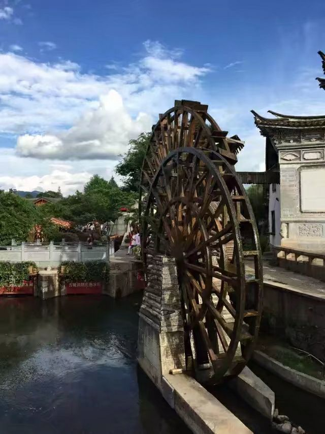那山，那水，那边蓝天...
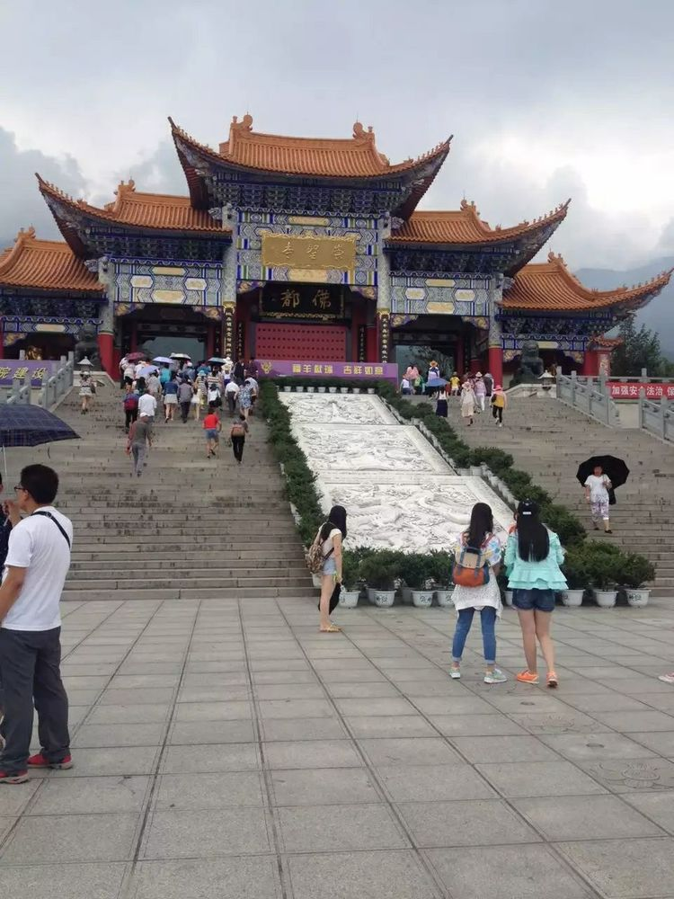崇圣寺三塔
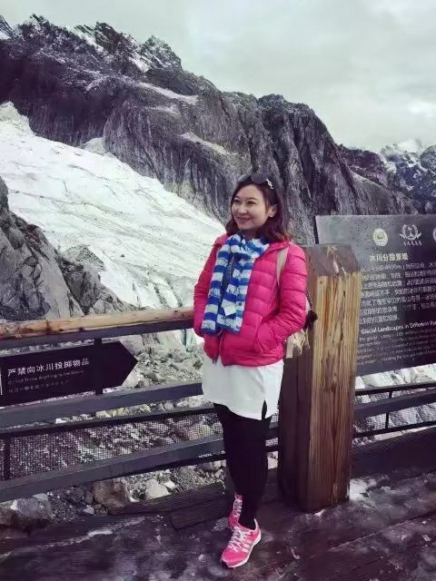 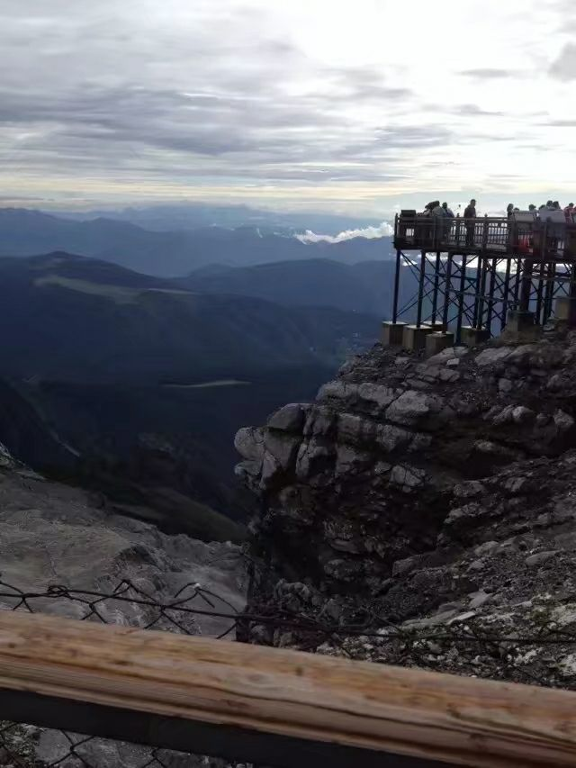我们是七月份去的云南，那个季节很少下雪，但是我们在去玉龙雪山前一天晚上竟然下雪了，导游说我们这一车都是有福之人呐，能欣赏到雪后雪山的美景
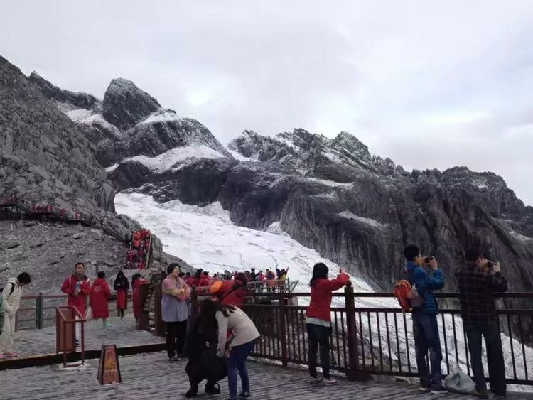“玉龙昂首天咫尺，远视滇池照影白。”玉龙雪山以险、奇、美、秀着称于世，气势磅礴，玲珑秀丽。今日一见，果然震撼。上雪山前还很忐忑，怕自己高原反应，备好了氧气瓶，巧克力、糖果等吃的，结果上去之后看到了美景，心情立马嗨了！
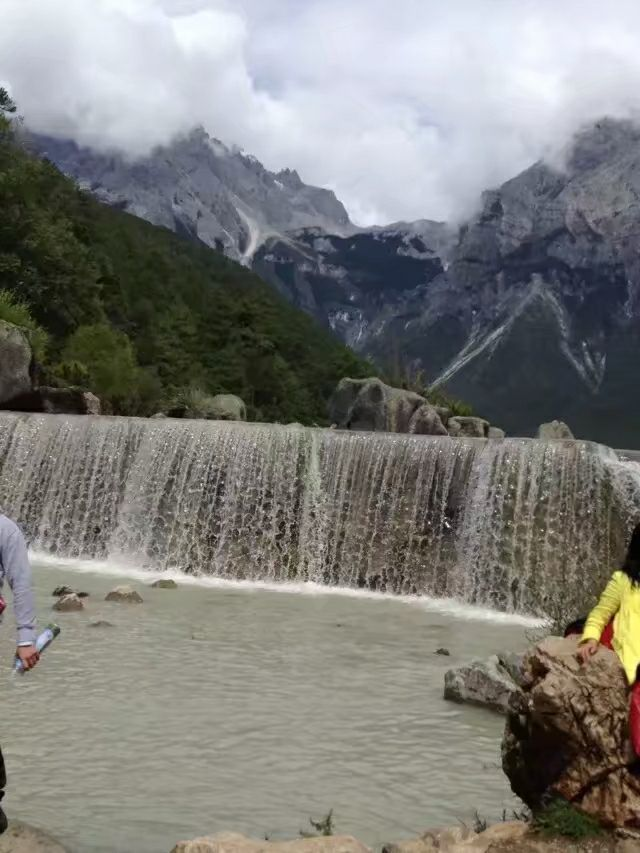 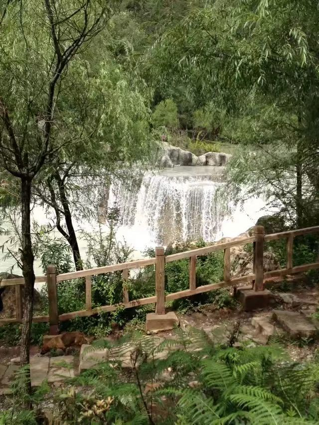 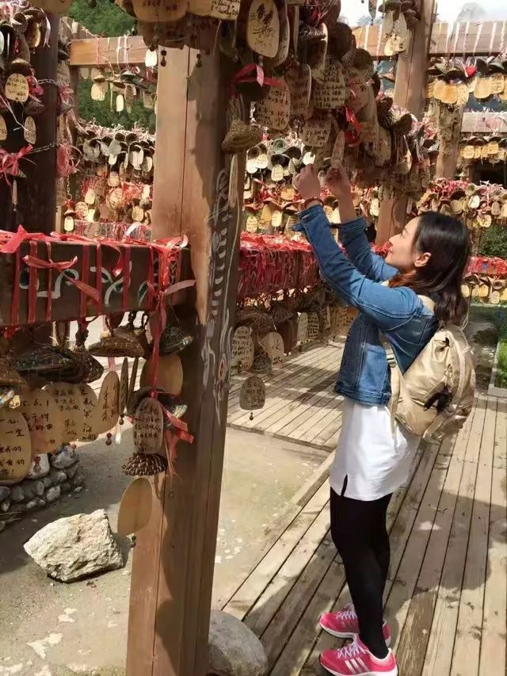去一趟雪山，需要穿三个季节的衣服，从雪山到蓝月谷，一路要经历冬、秋、夏。
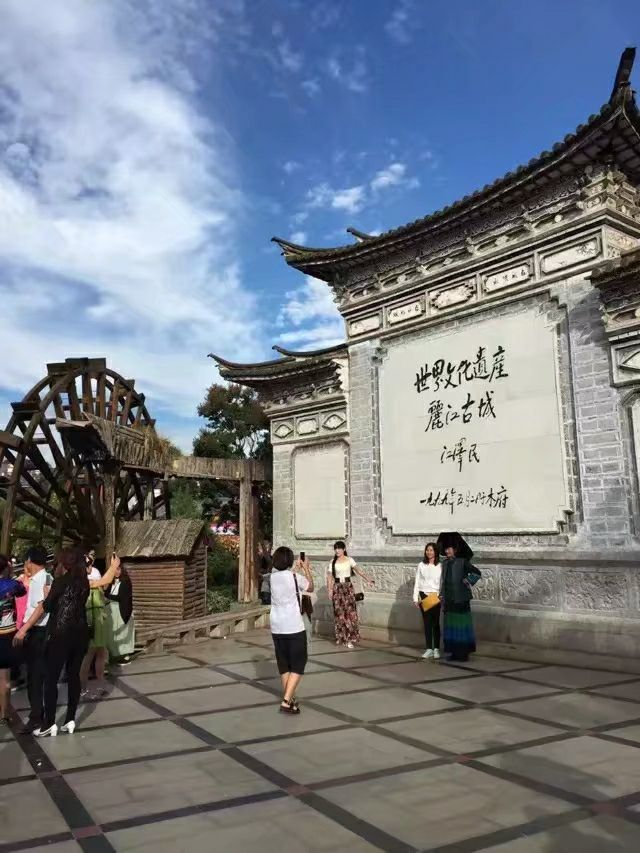 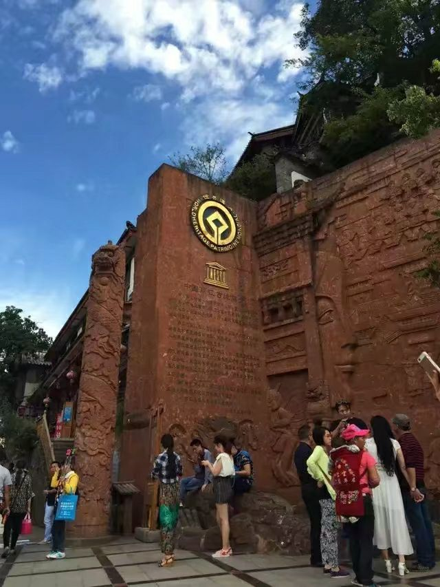云南的天空有一种静谧之美，在这片土地上就连时间都流淌得格外缓慢……
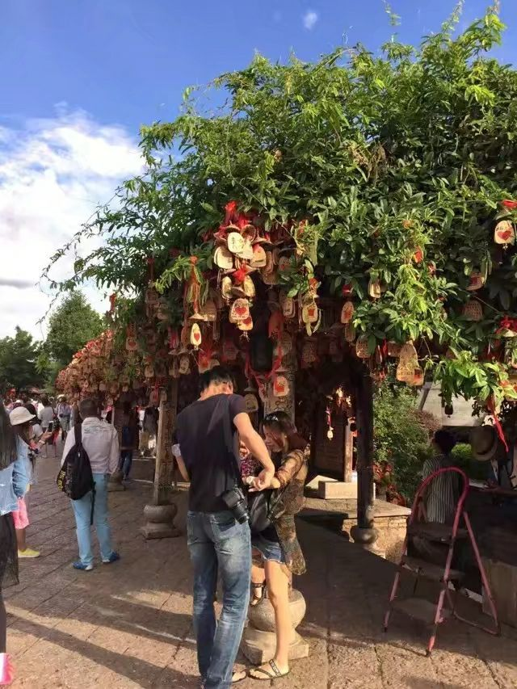 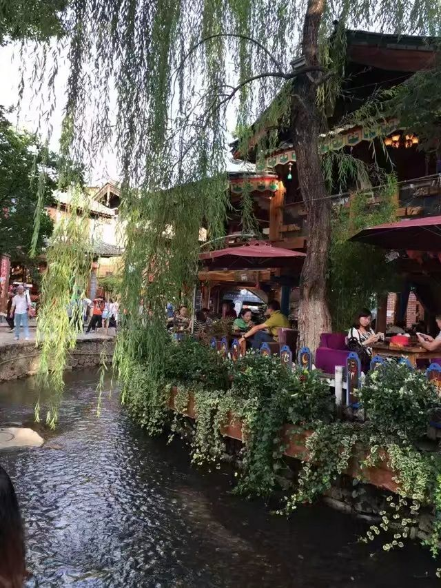被称为艳遇之都的丽江，感受是一个充满故事的小古镇，据说好多人都会选择到丽江进行“疗伤”；听着手鼓声，呼吸着新鲜的空气，走在这小道上，好希望时间静止锁住这美好的一切……
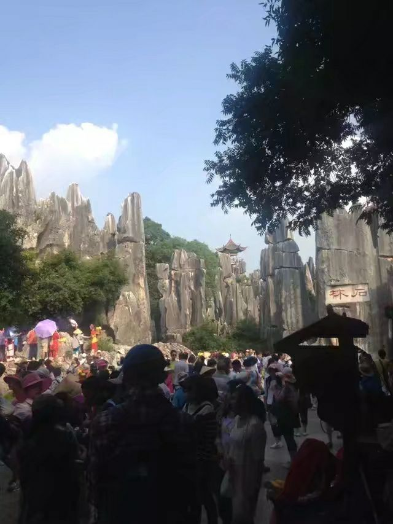 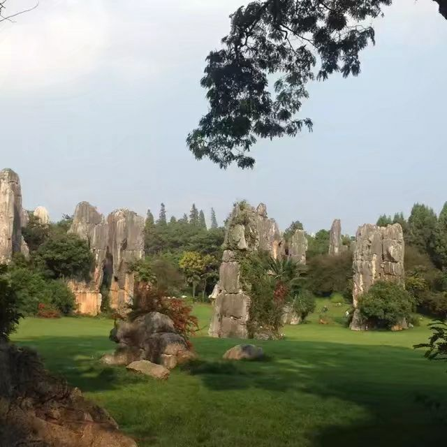石林唯一记起来的感受就是——热、累！云南的行程跟团时间很赶，石林是我们的最后一站，所以根本无心情欣赏景色了，就是感觉到好累，已经虚脱了...
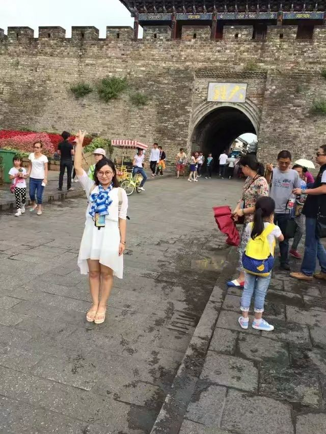 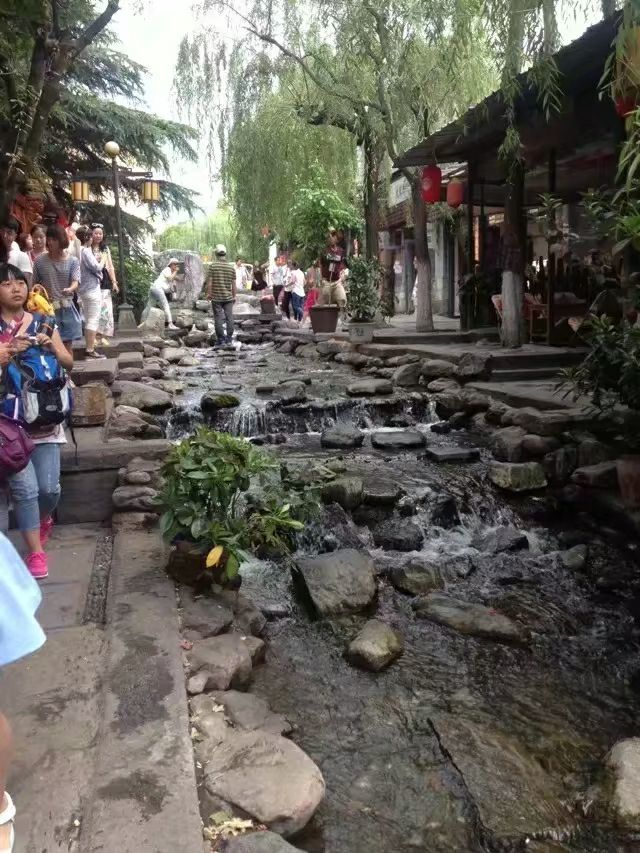冲着还珠格格里边向往的世外桃源来的，然后有点小失望。不过大理的水果倒是很便宜，去丽江那块儿就贵了，山竹和芒果好吃又好便宜！
美好的年轻时光，云南的闺蜜之旅.....